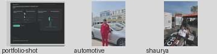
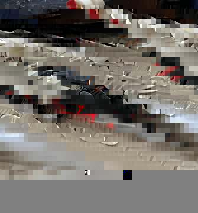

01 · IN PROGRESS · 2025
Autonomous Assistive Robotic Arm
Mobile rover and robotic arm for inspection, fault detection, screw tightening, and material handling.
VIEW PROJECT →I build across mechanical design, automation, machine vision, electronics, and system integration, with a strong interest in automotive and applied robotics.

I am a Mechatronics Engineering graduate from VIT Chennai with experience spanning product design, automation, computer vision, robotics, automotive service, and technical project execution.
Automotive systems, mechatronics, industrial automation, machine vision, intelligent inspection, and engineering product development.
Languages: English, Malayalam, Tamil, Hindi, French (beginner).
Each project opens a fuller case file with the description, your contribution, technologies, and project images.
Mobile rover and robotic arm for inspection, fault detection, screw tightening, and material handling.
VIEW PROJECT →
Vision-guided autonomous sorting and inspection using an RGB camera and object detection.
VIEW PROJECT →
Modular VTOL platform designed to transform between aerial and ground operation.
VIEW PROJECT →
Low-cost automated aeroponics with environmental sensing, control, and monitoring.
VIEW PROJECT →
Assistive device developed to compensate for hand tremors and stabilize spoon motion.
VIEW PROJECT →
Assembly redesign using K-Means clustering and material-similarity adjacency.
VIEW PROJECT →Click an experience to see the context, responsibilities, and related images.

Technology projects for the Gulf oil and gas sector, including requirements, vision systems, industrial sensing, dashboards, documentation, and execution.

Diagnostics, servicing, maintenance, and repair work involving engines, transmissions, brakes, and electrical systems.

Chassis design and system integration for Formula Bharat, alongside business and cost/manufacturing activities.

Published research · 2025 · Cogent Engineering
OPEN RESEARCH →Components in the improved valve assembly, a 64.3% reduction reported in the study.